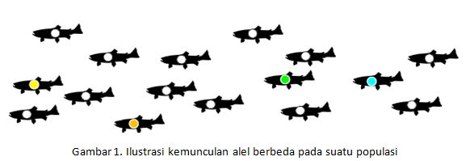

GENETIKA POPULASI
Pendahuluan
Populasi hewan dan tumbuhan memperlihatkan keragaman jumlah, struktur dan dinamika yang sangat besar. Satu contoh ekstrim, dimana dalam suatu populasi hanya terdapat struktur tunggal, terpisah dari satu sama lain dimana semua individu memiliki peluang yang sama untuk kawin dengan satu sama lain. Fenomena di atas biasa disebut dengan istilah model _ panmictic _ atau _ random breeding/mating . Sebaliknya, ada populasi yang terpisah secara internal akibat adanya barrier seperti jalan raya, arus laut, pegunungan, tebing dsb, menjadi kelompok-kelompok individu atau biasa disebut subpopulasi _. Dinamika struktur populasi dipengaruhi oleh sifat-sifat penting seperti keragaman genetika (genetic diversity), jumlah populasi efektif/_effective population size__(N__e__)_, diferensiasi subpopulasi dan migrasi antar subpopulasi.
Konsep Dasar
Frekuensi alel merupakan tingkat kemunculan suatu varian gen di lokus tertentu. Ilustrasi di bawah ini menjelaskan bahwa alel bintik putih yang muncul pada beberapa individu ikan merupakan alel yang dominan pada populasi, sehingga bisa dikatakan bahwa alel bintik putih memiliki “frekuensi alel tinggi”. Sedangkan, alel bintik hijau, biru, kuning dan jingga merupakan alel yang langka dan hanya ditemukan pada sedikit individu pada satu populasi, sehingga disebut memiliki “frekuensi alel rendah”.

Gambar 1. Ilustrasi kemunculan alel berbeda pada suatu populasi
Perubahan frekuensi alel terjadi dari waktu ke waktu pada level populasi yang menuntun kepada terjadinya evolusi. Evolusi tidak disebabkan oleh perubahan pada level individu. Faktor - faktor yang menyebabkan perubahan pada frekuensi alel adalah sebagai berikut:
Prinsip Hardy Weinberg Equilibrium
Prinsip Hardy-Weinberg menyatakan bahwa frekuensi alel dan frekuensi genotipe dalam suatu populasi akan tetap konstan, yakni berada dalam kesetimbangan dari satu generasi ke generasi lainnya kecuali apabila terdapat pengaruh-pengaruh tertentu yang mengganggu kesetimbangan tersebut. Pengaruh-pengaruh tersebut mencakup perkawinan tak acak, mutasi, seleksi, jumlah populasi terbatas, hanyutan genetic (gene flow), dan arus gen (genetic drift). Penting untuk dipahami bahwa satu atau beberapa pengaruh ini akan selalu hadir di lingkungan. Oleh karenanya, kesetimbangan Hardy-Weinberg sangatlah tidak mungkin terjadi di alam. Kesetimbangan genetik adalah suatu kondisi ideal yang dapat dibuat sebagai garis dasar untuk mengukur perubahan genetik.
Contoh paling sederhana dapat terlihat pada suatu lokus tunggal beralel ganda; alel yang dominan ditandai dengan A dan yang resesif ditandai dengan a. Kedua frekuensi alel tersebut ditandai dengan _ p _ dan _ q _ secara berurutan; freq( A ) = p; freq( a ) = q; p + q = 1. Apabila populasi berada dalam kesetimbangan, karenanya freq( AA ) = _p_2 untuk homozigot AA dalam populasi, freq( aa ) = q_2 untuk homozigot aa , dan freq( Aa ) = 2_pq untuk heterozigot Aa.
Konsep ini juga dikenal dalam bermacam nama: Kesetimbangan Hardy-Weinberg , Teorema Hardy-Weinberg , ataupun Hukum Hardy-Weinberg. Asas ini dinamakan dari G. H. Hardy dan Wilhelm Weinberg.
Syarat berlangsungnya asas Hardy-Weinberg
Jika syarat-syarat tersebut terpenuhi, karenanya frekuensi alel dan frekuensi genotipe dalam suatu populasi akan konstan dan evolusi pun tidak akan terjadi. Tetapi dalam kehidupan, syarat-syarat tersebut sulit atau tidak mungkin terpenuhi untuk evolusi dapat terjadi.
Fst atau Indeks Fiksasi bertujuan mengukur tingkat inbreeding suatu subpopulasi terhadap populasi total. Indeks ini biasa digunakan untuk mengestimasi differensiasi subpopulasi atau struktur populasi. Nilai Fst berkisar 0 ??? 1. Nilai 0 menandakan bahwa antar subpopulasi terjadi percampuran gen atau bisa dikatakan bahwa populasi tidak memiliki struktur. Sebaliknya, untuk nilai 1 bahwa antar subpopulasi tidak terjadi percampuran gen atau populasi memiliki struktur.
\[ Fst=\frac{(Ht-Hs)}{Ht} \]
Dimana:
Ht : Heterozigositas expected dari total populasi
Hs : Rata-rata heterozigositas expected subpopulasi
Ada beberapa marker dan metode berbeda yang biasa digunakan untuk studi genetika populasi, yaitu di antaranya:
Software yang umum digunakan
Referensi
Beebee, Trevor and Rowe, Graham. 2008. An Introduction to Molecular Ecology (Second Edition). Oxford University Press Inc., New York [buku]
Hartl, Daniel L and Clark, Andrew G. 1997. Principles of Population Genetics (Third Edition). Sinauer Associates, Inc. USA [buku]